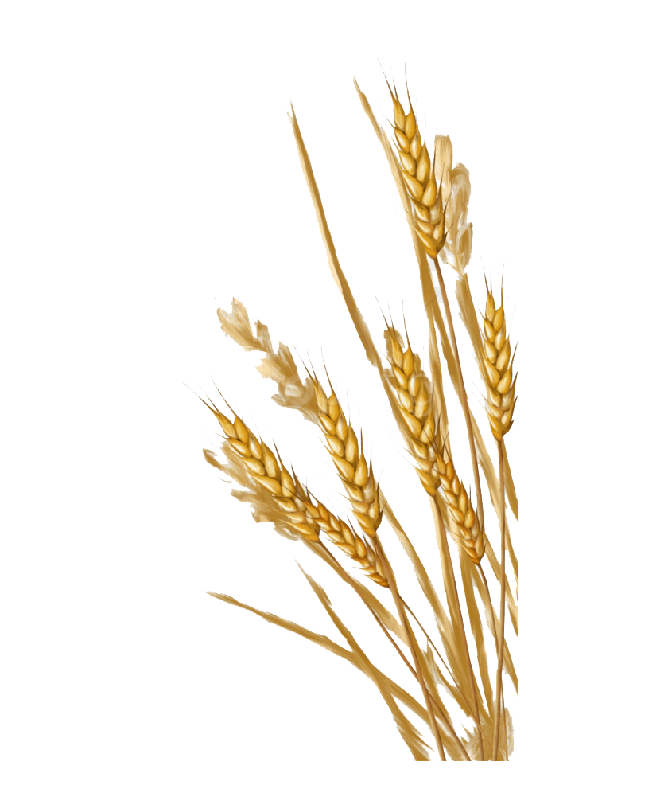

Wheat is a grass widely cultivated for its seed, a cereal grain which is a worldwide staple food. The many species of wheat together make up the genus Triticum; the most widely grown is common wheat (T. aestivum). The archaeological record suggests that wheat was first cultivated in the regions of the Fertile Crescent around 9600 BCE. Botanically, the wheat kernel is a type of fruit called a caryopsis. Wheat is grown on more land area than any other food crop (220.4 million hectares, 2014). World trade in wheat is greater than for all other crops combined. In 2017, world production of wheat was 772 million tonnes, with a forecast of 2019 production at 766 million tonnes, making it the second most-produced cereal after maize. Since 1960, world production of wheat and other grain crops has tripled and is expected to grow further through the middle of the 21st century. Global demand for wheat is increasing due to the unique viscoelastic and adhesive properties of gluten proteins, which facilitate the production of processed foods, whose consumption is increasing as a result of the worldwide industrialization process and the westernization of the diet. Wheat is an important source of carbohydrates. Globally, it is the leading source of vegetable protein in human food, having a protein content of about 13%, which is relatively high compared to other major cereals but relatively low in protein quality for supplying essential amino acids. When eaten as the whole grain, wheat is a source of multiple nutrients and dietary fiber. In a small part of the general population, gluten – the major part of wheat protein – can trigger coeliac disease, noncoeliac gluten sensitivity, gluten ataxia, and dermatitis herpetiformis.
Technological advances in soil preparation and seed placement at planting time, use of crop rotation and fertilizers to improve plant growth, and advances in harvesting methods have all combined to promote wheat as a viable crop. When the use of seed drills replaced broadcasting sowing of seed in the 18th century, another great increase in productivity occurred. Yields of pure wheat per unit area increased as methods of crop rotation were applied to long cultivated land, and the use of fertilizers became widespread. Improved agricultural husbandry has more recently included threshing machines, reaper-binder machines (the 'combine harvester'), tractor-drawn cultivators and planters, and better varieties (see Green Revolution and Norin 10 wheat). Great expansion of wheat production occurred as new arable land was farmed in the Americas and Australia in the 19th and 20th centuries.
